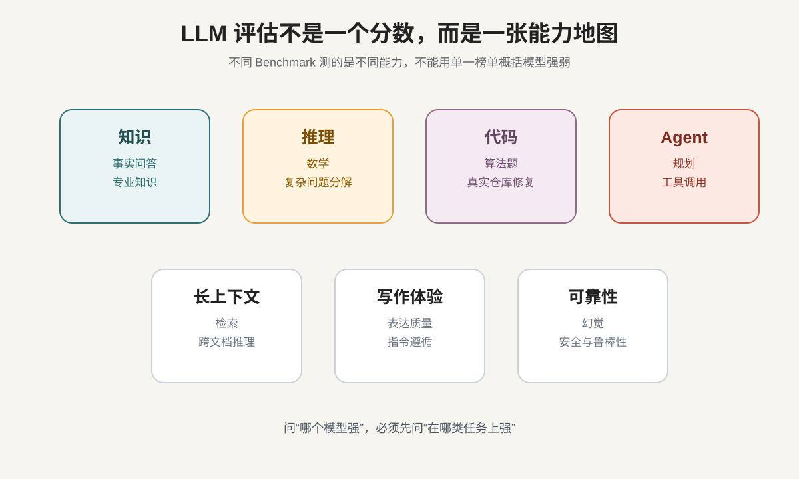
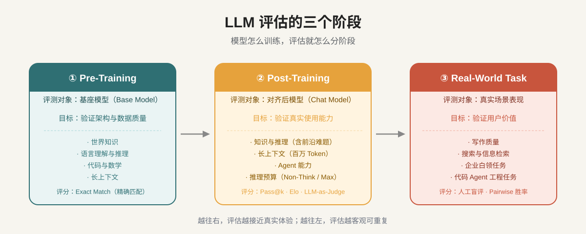
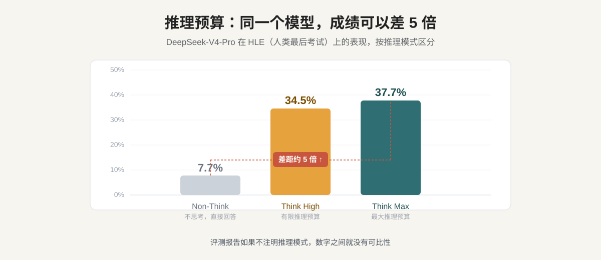
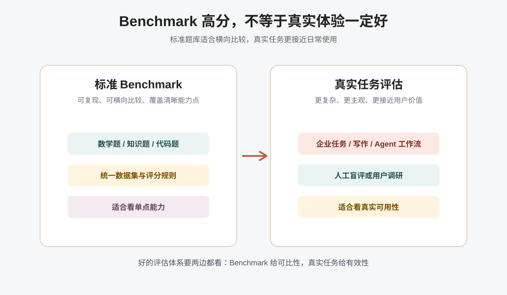

AI Evaluation · 系列第 5 篇
How do we know whether a model is strong?
本文参考了 DeepSeek-V4 论文中的评估体系。
LLM 的能力是多个维度的：一个模型可能数学很强，写作一般；聊天很流畅，但修复真实 bug 不稳定；短题答得好，一放进长文档或 Agent 工作流就掉链子。
LLM 评估主要有以下几个维度（暂不考虑多模态能力）

评估也是分阶段的
LLM 的训练分 Pre-Training（预训练）和 Post-Training（后训练）两个大阶段。不同阶段出来的模型，能力侧重不同，评估方法也不同。加上最后在真实任务中的表现，完整的评估体系一共有三个阶段。

一、Pre-Training：Base Model Evaluation
这个阶段评测什么
① Pre-Training · Base Model预训练结束后，得到的是 Base Model。它还没有经过指令微调，不会"听话"，不擅长对话，但它是所有后续能力的地基。
核心目标是：在只做大规模 next-token prediction 训练时，模型有没有学到语言、知识、推理、代码、数学等基础能力？架构设计是否有效，数据质量是否够高？
主要 Benchmark
基座模型的评测通常覆盖四个维度：
世界知识
测的是"模型记住了多少、记得准不准"。
常见 Benchmark：MMLU、MMLU-Pro、C-Eval（中文知识）、CMMLU、TriviaQA、SimpleQA、FACTS Parametric。
题目有标准答案，评分方式是 Exact Match（精确匹配），客观、自动化、可重复。
语言理解与推理
测的是"模型能不能理解语言逻辑，完成复杂推断"。
常见 Benchmark：BBH（BIG-Bench Hard）、DROP、HellaSwag、WinoGrande。
BBH 被专门设计成"让模型难以靠记忆做对"的题集，更能测出真实推理能力。
代码与数学
测的是结构化推理和程序生成能力。
常见 Benchmark：HumanEval（Pass@1）、BigCodeBench、GSM8K、MATH、CMath。
这类题有执行环境做验证，答案对不对不靠人判断，是目前最可靠的自动评估之一。
长上下文
测的不是"上下文窗口有多长"，而是"模型在很长的输入里，能不能找到并用好关键信息"。
常见 Benchmark：LongBench-V2（多任务长文档理解）。
评测方法
这个阶段以自动化客观评分为主：
- 多数题目用 Exact Match（EM）：模型输出必须与标准答案完全匹配
- 通常用 few-shot 提示（比如 5-shot），给模型几道例题后再提问，减少格式差异带来的噪音
- 所有模型在同一评估框架下跑，结果才有横向可比性
DeepSeek-V4 论文特别说明：分数差距不超过 0.3 视为同水平，避免把统计误差当成真实差距。
二、Post-Training：Standard Benchmark Evaluation
这个阶段评测什么
② Post-Training · Chat Model经过 SFT（监督微调）和 RL（强化学习）后，得到的是对齐模型（Chat Model），也就是用户实际使用的版本。
这个阶段的评测，目标是：验证模型在真实指令下的综合能力，包括知识调用、推理深度、工具使用和多步骤任务完成。
题目比预训练阶段难得多，覆盖的场景也更接近实际使用。
主要 Benchmark
知识与推理（含前沿难题）
- MMLU-Pro、GPQA Diamond：研究生级科学题，需要深度推理
- HLE（Humanity's Last Exam，人类最后考试）：目前最难的多学科综合评测，题目由顶尖学者出题
- LiveCodeBench：持续更新的真实竞赛代码题，避免训练数据污染
- IMOAnswerBench：国际数学奥林匹克水平题目
- Codeforces（竞赛 Elo 排名）：让模型参加真实编程竞赛，计算 Elo 评分
长上下文（百万 Token 级别）
- MRCR（Multi-Round Context Retrieval）：在百万 Token 中做多针检索，测模型能不能在超长输入里找到所有相关信息
- CorpusQA：更接近真实场景的长文档问答
Agent 能力
Agent 评测是目前发展最快的方向，测的是模型能否在真实工具环境里完成多步骤任务：
| Benchmark | 测试内容 |
|---|---|
| SWE-Verified | 修复真实 GitHub issue，能否通过测试 |
| Terminal Bench 2.0 | 终端命令行操作任务 |
| BrowseComp | 网页浏览 + 复杂信息检索 |
| MCPAtlas / Tool-Decathlon | 跨多种工具、MCP 服务的综合使用 |
DeepSeek-V4 在设计 Agent 评测时，刻意把工具集限制到最少——只给模型 bash 和 file-edit 两个工具，目的是测真实推理能力，而不是工具工程能力。
评测方法
这个阶段的方法开始多元化，因为任务类型不同，评分逻辑也不同。
Pass@k
生成 k 个答案，只要有一个正确就算通过。Pass@1 看稳定性；Pass@8、Pass@16 更像是在看模型的能力上限。适合数学、代码等有明确对错的任务。
Codeforces Elo：把模型当选手参赛
这是 DeepSeek-V4 论文里一个有意思的评估设计，比干讲 Elo 原理直观得多：
每道题 → 生成 32 个候选解
→ 随机采样 10 个提交
→ 按真实 Codeforces 赛制计分（错误次数会被扣分）
→ 与真实人类选手历史成绩比较
→ 最终得出模型的估算人类排名结果：DeepSeek-V4-Pro-Max 估算排在人类选手第 23 位。
LLM-as-Judge（用 AI 当裁判）
有些任务很难用标准答案评分，比如"这段分析有没有深度"、"这段代码是否符合工程规范"。
一种解决方案是用另一个 LLM 来评分，提供评分 Rubric（评分细则），让模型按照细则打分。这叫 LLM-as-Judge，也叫 Generative Reward Model（生成式奖励模型）。
DeepSeek-V4 在后训练阶段放弃了传统的标量打分模型，改用这种方式评估难以自动验证的任务。优点是覆盖面广，缺点是评审模型本身也可能有偏见，需要谨慎使用。
推理预算：一个容易被忽视的变量
评测 Post-Training 模型时，还有一个关键变量经常被忽视：模型用了多少推理 Token？
现代推理模型支持不同的"思考深度"，DeepSeek-V4 把它分成三个模式：
| 模式 | 特点 | 适合场景 |
|---|---|---|
| Non-Think | 直接回答，不输出思维链 | 日常对话、快速响应 |
| Think High | 有限推理预算，输出 <think> 过程 | 中等复杂任务 |
| Think Max | 最大推理预算，彻底展开推理 | 探索模型能力上限 |
同一个 DeepSeek-V4-Pro，在 HLE（人类最后考试）上的成绩：

Non-Think 模式 7.7%，Think Max 模式 37.7%，差距将近 5 倍。
如果一篇评测报告没有注明推理模式，它的数字就没有可比性。两个模型的 HLE 分数，一个用了 Max 模式，另一个用了 Non-Think，直接对比不具有参考性。
三、Real-World Task：真实场景评测
为什么还需要真实场景评测
③ Real-World Task"标准化 Benchmark 往往难以捕捉真实任务的复杂性，测试结果和实际用户体验之间存在差距。"——DeepSeek-V4 论文
标准 Benchmark 解决的是"可比性"问题。但它终究是"题目"，真实工作不是题目。真实任务通常包含：模糊需求、多轮上下文、隐含偏好、格式要求、领域规范——这些很难塞进一道标准化的题目里。
所以，严肃的评估体系会在标准 Benchmark 之外，额外设计真实场景评测，验证模型能不能真正服务用户。

主要任务类型
写作质量
测模型能不能写出真正好用的内容，不只是"文字通顺"。
DeepSeek-V4 做了两类中文写作评测：
- 功能性写作：3170 道题，覆盖商务文书、媒体文案、学术写作、公文等 30+ 子类
- 创意写作：2837 道题，覆盖小说、散文、诗歌等文体
评测结果用胜率衡量：DeepSeek-V4-Pro 在功能性写作上对 Gemini-3.1-Pro 的总体胜率为 62.65% vs 34.10%。
搜索能力
测模型在接入搜索工具后，能不能真正找到并整合信息。DeepSeek-V4 对比了两种搜索策略：
- RAG（检索增强生成）：一次性检索，喂给模型
- Agentic Search（智能体搜索）：模型自己决定搜什么、搜几次、怎么整合
869 道题的测试结果：Agentic Search 胜率 61.7%，RAG 只有 18.3%。特别是在"原因分析"和"规划策略"类问题上，差距最明显——这类任务需要迭代搜索，一次性检索往往不够。
企业白领任务
测模型在职业场景里的实际输出质量。DeepSeek-V4 设计了 30 个高难度任务，跨越金融、法律、教育、技术等 13 个行业，评估四个维度：
| 评估维度 | 含义 |
|---|---|
| 任务完成度 | 核心问题有没有被真正解决 |
| 指令遵循 | 有没有遵守格式、约束、特殊要求 |
| 内容质量 | 事实准确性、逻辑连贯性、专业深度 |
| 格式美观 | 排版可读性、视觉呈现 |
代码 Agent 工程任务
测模型在真实 R&D 环境里能不能独立完成工程任务。DeepSeek-V4 从 50+ 工程师的真实工作中收集了约 200 道题（PyTorch、CUDA、Rust、C++ 等），每道题配有原始仓库、执行环境和人工评分 Rubric，最终筛选出 30 道作为评测集。
| 模型 | Pass Rate |
|---|---|
| Claude Haiku 4.5 | 13% |
| Claude Sonnet 4.5 | 47% |
| DeepSeek-V4-Pro-Max | 67% |
| Claude Opus 4.5（标准） | 70% |
| Claude Opus 4.6（思考版） | 80% |
评测方法
真实场景任务大多没有标准答案，所以评分方式也不一样。
Pairwise 人工盲评
同一个任务，给两个模型各做一遍，让评审者在不知道哪个是哪个模型的情况下判断：A 更好、B 更好、还是差不多？最终统计 Win / Tie / Lose。
盲评的关键是评审者不知道模型身份，避免品牌偏见影响判断。这种方法适合写作、分析、企业任务这类主观性强的评测。局限是成本高、速度慢，而且评审者之间的偏好不一定一致。
LLM-as-Judge 结合 Rubric
对于规模更大的评测，完全靠人工不现实。另一种做法是：先设计详细的评分细则（Rubric），再用 LLM 按照细则评分，代替部分人工打分。这可以大幅扩展评测规模，但评审模型本身的偏见和盲点也会带进来。
四、读懂模型评测报告：一张检查清单
下次看到某个新模型"刷新 SOTA""超越 GPT"这类说法，可以用这张清单过一遍：
关于评测阶段
- 这是 Base 模型评测，还是 Chat 模型评测？（两者不能混比）
- 有没有真实场景评测，还是只有标准 Benchmark？
关于推理预算
- 有没有注明推理模式（Non-Think / Think / Max）？
- 如果是推理模型，有没有控制推理 Token 数量？
关于 Benchmark 本身
- 这些 Benchmark 和你的实际任务相关吗？
- 有没有防止数据污染的措施（比如用竞赛后的新题）？
- 题目是否有足够区分度，还是大家都高分看不出差异？
关于评测公平性
- 不同模型用的 prompt 格式、采样参数是否一致？
- 如果是 Pairwise 评测，评审者是否是盲评？
关于评分的有效性
- 分数提升转化成真实用户体验提升了吗？
- 有没有内部用户调研或线上数据验证？
总结
LLM 评估不是一个分数，而是三层叠加：
Pre-Training 评测模型的知识地基和架构效率
Post-Training 标准 Benchmark模型在各类能力上的横向可比位置
Real-World Task 评测模型在真实场景里到底好不好用
三层都看，才算看完一份评测报告。